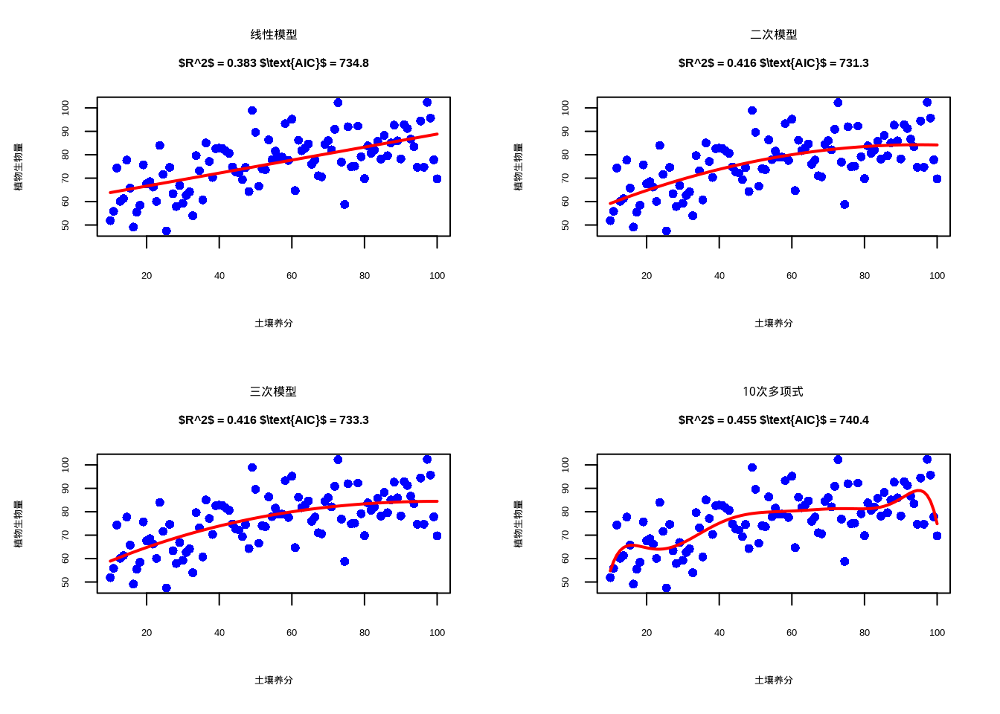
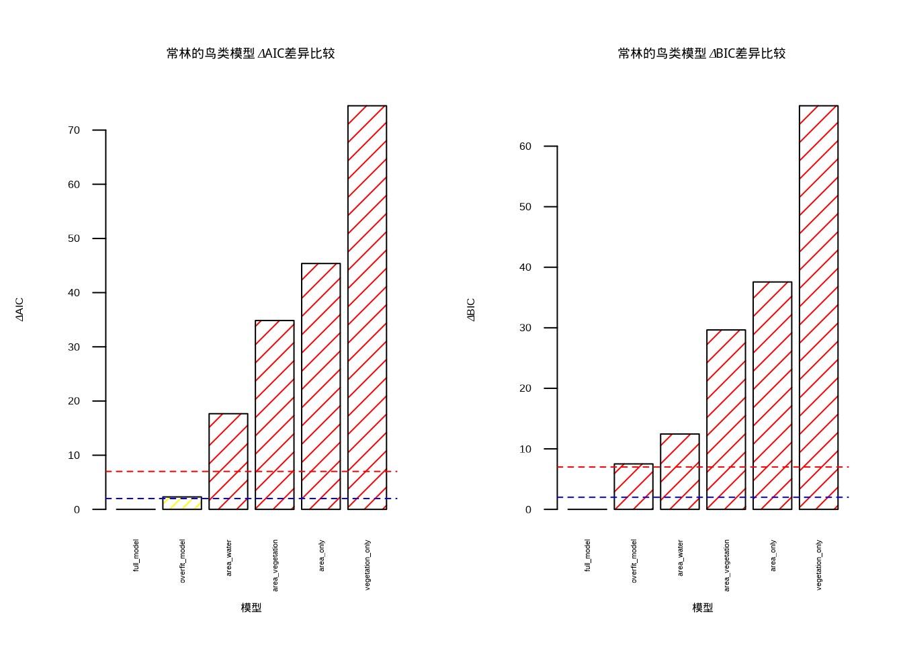
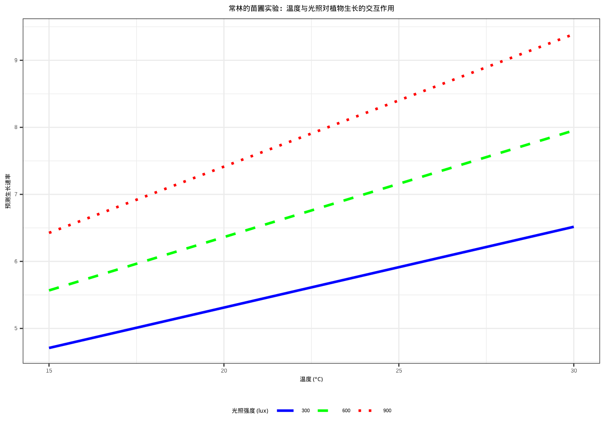
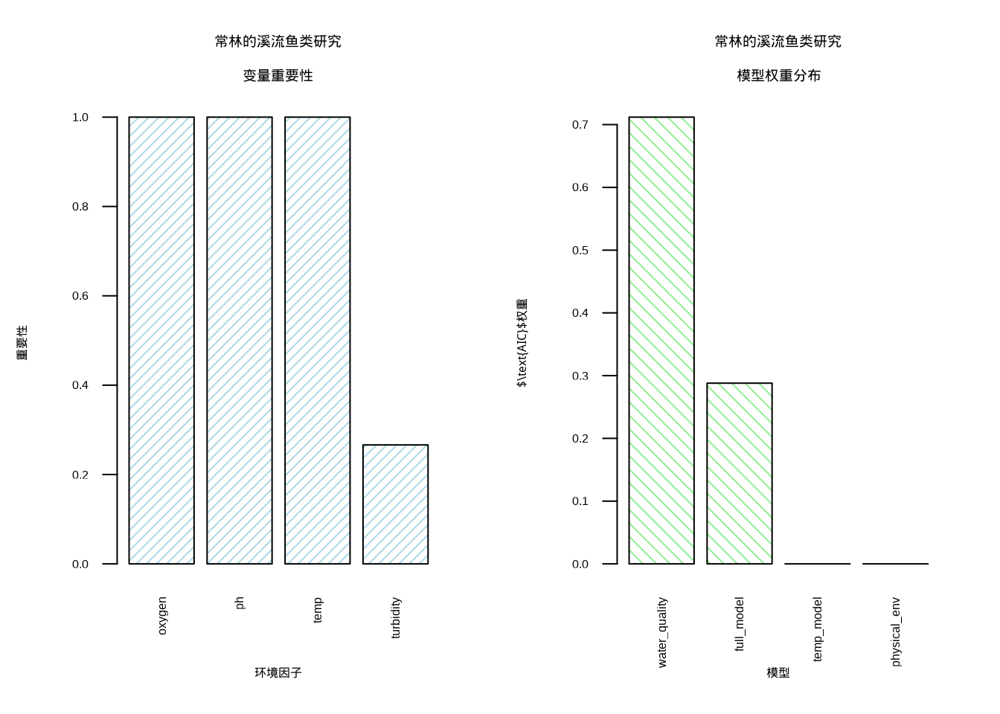
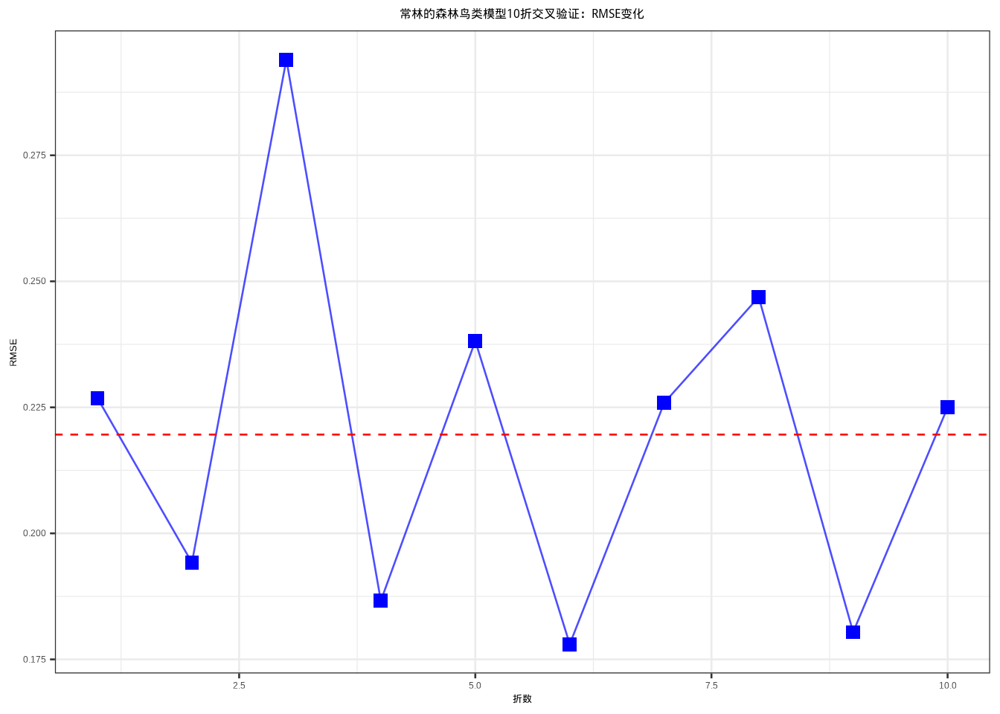
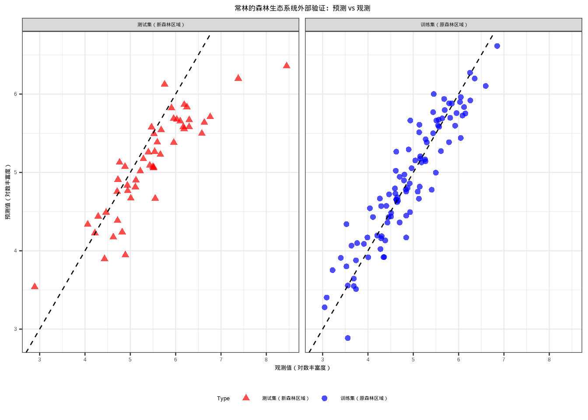

8 模型选择与验证：从信息准则到AI评估
8.1 本章学习目标
知识目标：学完本章后，你能回答：AIC和BIC在惩罚项设定上有何不同，各自适用于什么场景？\(k\)折交叉验证如何评估模型的泛化能力，为什么仅凭训练集的\(R^2\)不足以衡量模型优劣？模型平均为什么在多数情况下优于”赢者通吃”的单一模型选择策略？
技能目标：你能独立用R为多个候选模型计算AIC、BIC和AIC权重，实施\(k\)折交叉验证并比较不同模型的预测性能，进行全面的模型诊断，包括残差分析、多重共线性诊断和影响点识别。
AI素养目标：你能理解AIC在深度学习中的困境，神经网络的”参数数量”概念模糊（权重共享、dropout、早停都在改变有效参数数），使得传统信息准则难以直接套用。你能认识到空间交叉验证（而非随机CV）对生态学数据的关键意义，空间自相关会导致训练集和测试集之间的”数据泄露”，使验证结果虚假乐观。你将对自动机器学习（AutoML）保持既开放又审慎的态度：它可以作为模型空间的探索工具，但”统计最优”与”生态学合理”之间的鸿沟，只有你的领域知识才能弥合。
8.2 引言
常林站在她的研究室里，面对着电脑屏幕上一排排回归模型的结果，陷入了沉思。在过去几个月的研究中，她已经成功建立了多个统计模型：简单线性回归模型揭示了温度与树木生长速率的关系，多元回归模型量化了温度、降水和土壤氮含量对植物生物量的综合影响，多项式回归模型则描绘出物种丰富度随海拔变化的优美曲线。每个模型都讲述着森林生态系统的不同故事，每个模型的统计指标都看起来相当不错。
但现在，她面临着一个新的挑战：在这些候选模型中，哪一个才是最可靠的？哪一个模型的预测结果可以用来指导保护区的实际管理？她的导师提醒她，建立模型只是研究的开始，更重要的是选择和评估模型，确保研究结论的可靠性。常林意识到，她需要掌握一套系统的方法来回答这些问题，这正是模型选择与评估的核心所在。
在前面的章节中，我们跟随常林学习了多种回归模型，从简单的线性回归到复杂的多元和多项式回归。现在，我们将继续她的研究历程，学习如何在众多候选模型中做出科学的选择，如何评估模型的可靠性，如何确保研究结论能够应用于实际的生态保护工作。
模型选择与评估是生态统计建模中至关重要的环节，它不仅仅是技术性的统计操作，更是连接数据、模型与生态学解释的关键桥梁。在生态学研究中，我们追求的不是数学上最完美的模型，而是最能反映生态过程本质、最具预测能力和解释力的模型。常林的困惑代表了所有生态学研究者共同面临的挑战：面对丰富的建模工具和复杂的生态数据，如何做出明智的选择？
生态系统的复杂性决定了单一模型很难捕捉所有生态关系。当常林面对她的森林调查数据时，她可以构建线性回归模型、多项式回归模型、广义线性模型等多种统计模型。每种模型都基于不同的假设，捕捉数据中不同层面的信息。模型选择的过程就是系统性地比较这些候选模型，找出最适合当前研究问题的那个模型。
常林在研究初期就体会到了模型选择的必要性。她收集了8个环境因子的数据，包括温度、降水、海拔、土壤pH、植被覆盖度等。如果将所有变量都纳入模型，虽然能够获得很高的\(R^2\)值，但模型会变得极其复杂，难以解释每个环境因子的独立作用。更严重的是，这种”厨房水槽模型”(把所有变量都塞进去的模型)往往过度适应了训练数据的随机噪声，在预测新样地时表现糟糕。模型选择帮助她确定哪些环境因子真正重要，哪些可以忽略。
其次，生态关系的复杂性要求我们在不同函数形式之间做出选择。常林在分析物种丰富度与海拔的关系时，发现线性模型明显不足，物种丰富度在中等海拔最高，而在高海拔和低海拔都较低。她需要决定使用二次多项式、三次多项式，还是更复杂的函数形式。模型选择方法如\(\text{AIC}\)帮助她找到了最优的函数复杂度，既充分描述了生态模式，又避免了过度拟合。
更重要的是，模型选择体现了生态学研究的简约性原则。常林的导师经常提醒她：“在科学研究中，简单就是美。”奥卡姆剃刀原理告诉我们：在同等解释力的模型中，应该选择最简单的那个。在生态学中，简约模型不仅计算效率更高，更重要的是它们通常具有更好的生态学解释性。一个包含过多参数的复杂模型可能能够完美拟合常林的150个样地数据，但其生态学意义往往难以理解，也难以推广到其他森林生态系统。
模型评估是模型选择的必要补充，它回答了一个更根本的问题：我们选择的模型是否真的可靠？常林意识到，即使她选择了统计指标最优的模型，也必须通过系统的评估来验证模型的可靠性。模型的可靠性体现在两个方面：统计可靠性和生态学可靠性。
统计可靠性关注模型是否满足基本的统计假设，参数估计是否准确，预测是否稳定。常林通过残差分析发现，她的某个模型存在明显的异方差性，在高海拔地区的预测误差明显大于低海拔地区。这提醒她需要重新审视模型假设或考虑数据变换。她还发现某些样地是强影响点，对模型参数估计有不成比例的影响。进一步调查后，她发现这些样地位于火烧迹地或人工林，代表了特殊的生态情境。这些诊断不仅帮助她识别技术问题，更重要的是揭示了森林生态系统的异质性。
生态学可靠性则关注模型结果是否具有生态学意义，是否能够为生态学理论提供支持，是否能够指导生态保护实践。常林在模型评估过程中始终牢记：一个统计上完美的模型如果缺乏生态学解释性，其价值就会大打折扣。例如，她构建的一个模型虽然预测精度很高，但包含了负的温度系数，这在生态学上不合理，因为温度升高通常会促进植物生长。这促使她重新检查数据和模型设定，最终发现是变量间的多重共线性导致了参数估计的不稳定。
在常林的研究中，模型选择与评估不仅仅是统计技术，它们反映了她对森林生态系统的理解深度。当她系统地比较不同模型时，实际上是在检验不同的生态学假说。每个候选模型都代表了对森林生态过程的一种可能解释，模型选择过程就是通过数据来评估这些解释的相对合理性。
以常林研究森林鸟类丰富度为例，她构建了基于不同环境因子的多个模型：一个模型强调栖息地面积的主导作用(基于岛屿生物地理学理论)，另一个模型突出植被结构的重要性(基于生境异质性假说)，第三个模型关注水源可及性的影响(基于资源可获得性理论)。通过\(\text{AIC}\)比较，她不仅确定了哪个模型拟合最好，更重要的是能够量化不同生态因子对鸟类分布的相对贡献。这种量化分析为保护区管理提供了科学依据，如果栖息地面积被证明是最重要的预测变量，那么扩大保护区面积就应该成为保护规划的优先策略。
模型评估还帮助常林理解模型的局限性。她的导师提醒她：“在生态学中，没有完美的模型，只有在一定条件下适用的模型。”通过交叉验证，常林评估了模型在不同样地子集上的表现，发现模型在低海拔阔叶林中预测较准，但在高海拔针叶林中误差较大。这提示她模型的适用范围可能受到森林类型的限制。进一步的外部验证显示，当她将模型应用到邻近山区的另一个保护区时，预测精度有所下降。这种对模型局限性的清醒认识是科学严谨性的体现，也提醒常林在向保护区管理者汇报结果时需要明确说明模型的适用范围和不确定性。
在实际研究中，常林学会了结合统计准则和生态学知识来做出决策。统计准则如\(\text{AIC}\)、\(\text{BIC}\)提供了客观的模型比较标准，但她的导师强调它们不应该成为唯一的决策依据。例如，在某个模型中，土壤pH值的系数虽然统计上不显著(p=0.08)，但常林知道土壤酸碱度是影响植物生长的重要因子。在与导师讨论后，她决定保留这个变量，因为它具有明确的生态学意义，且p值接近显著性阈值。
常林的模型选择过程是迭代的、探索性的。她从最简单的单变量模型开始，逐步增加变量，同时密切关注\(\text{AIC}\)值和调整\(R^2\)的变化。当添加第四个变量后，\(\text{AIC}\)值不再明显下降，她意识到已经找到了复杂度与性能的最优平衡点。这种渐进式的建模策略不仅计算效率高，更重要的是帮助她理解每个环境因子对模型贡献的边际效应，哪些因子是必需的，哪些因子只是锦上添花。
最后，常林明确了模型选择应该服务于她的研究目标：为保护区管理提供科学依据。她的研究目标既包括机制探索(理解哪些环境因子驱动了物种分布)，也包括预测应用(预测不同管理措施对生物多样性的影响)。因此，她需要在模型的解释性和预测精度之间寻求平衡。一个高度复杂的机器学习模型可能预测精度更高，但难以向保护区管理者解释；而一个简单的线性模型虽然易于解释，但可能无法捕捉重要的非线性关系。通过系统的模型选择与评估，常林最终找到了适合她研究目标的最佳模型。
通过系统的模型选择与评估，常林构建了既统计可靠又生态学有意义的模型，为理解森林生态过程、预测气候变化影响、指导保护区管理提供了坚实的科学基础。这个过程不仅提升了她研究的科学质量，更重要的是培养了她对生态统计建模的深刻理解，认识到模型是工具而不是真理，是帮助我们理解复杂生态系统的有力手段。
现在，让我们跟随常林的脚步，系统学习模型选择与评估的方法和原理。
8.3 生态模型的比较与选择
8.3.1 模型选择原则
常林开始整理她的森林土壤调查数据，准备研究土壤养分如何影响植物生物量。她面临着一个关键问题：应该选择什么样的模型来描述这种生态关系？是简单的线性模型，还是更复杂的多项式模型？这个问题的答案引出了模型选择的核心原则，在模型复杂度和拟合优度之间寻找最优平衡点。
平衡模型复杂度和拟合优度是常林面临的第一个挑战。模型复杂度通常用参数数量来衡量，而拟合优度则通过模型对数据的解释能力来评估。在生态学中，我们面临着两难选择：过于简单的模型可能无法充分捕捉生态关系的复杂性，导致欠拟合；而过于复杂的模型则可能过度适应训练数据的随机噪声，导致过拟合。
常林在分析土壤养分与植物生物量的关系时，首先尝试了最简单的线性模型。但她很快发现，线性模型无法充分描述物种对养分的最适响应，在养分浓度过高或过低时，植物生长都会受到抑制。这种欠拟合不仅降低了模型的预测精度，更重要的是可能掩盖了关键的生态机制，如养分毒性和养分限制的阈值效应。
过拟合则是常林在后续建模中遇到的更常见问题。当她尝试使用10次多项式来描述养分与生物量的关系时，模型完美地拟合了训练数据中的随机变异，包括测量误差和偶然的生态现象。但这种过度拟合的模型在预测新样地时表现糟糕。在生态学中，过拟合的典型表现是模型包含了大量统计显著但生态学意义不明确的变量，或者使用了过于复杂的函数形式来描述本质上简单的生态关系。
奥卡姆剃刀原理在常林的模型选择中具有重要的指导意义。她的导师经常引用这个源自14世纪哲学家的原则：“如无必要，勿增实体”。在模型选择的语境下，这意味着在同等解释力的模型中，应该选择最简单的那个。简约模型不仅计算效率更高，更重要的是它们通常具有更好的泛化能力和生态学解释性。
生态学中的简约性原则体现在常林研究的多个层面。在变量选择层面，她应该只包含那些对植物生物量有实质性影响的土壤因子；在函数形式层面，她应该选择最能反映生态机制的函数关系；在模型结构层面，她应该避免不必要的复杂交互项和随机效应。
生态学意义是常林模型选择的最终评判标准。一个统计上完美的模型如果缺乏生态学解释性，其价值就会大打折扣。在生态学研究中，模型选择不仅要考虑统计指标，更要考虑模型的生态学合理性。例如，一个预测植物生物量的模型如果包含了生态学上不合理的环境因子组合，即使其预测精度很高，也难以被生态学家接受。
常林的模型选择过程本身就是对森林生态机制的深入探索。通过系统比较不同复杂度的模型，她能够识别哪些生态过程是必要的，哪些是冗余的。这种识别过程帮助她更深入地理解土壤养分如何影响森林生态系统的生产力。
常林开始实施她的模型复杂度平衡研究。她首先需要生成模拟数据来演示不同复杂度模型的拟合效果。这些数据模拟了她在森林调查中观察到的植物生物量与土壤养分的关系，其中真实生态关系是二次的，反映了物种对养分的最适响应模式。 数据导入后，常林开始拟合不同复杂度的模型。她构建了四个模型：线性模型、二次模型、三次模型和10次多项式模型，每个模型代表了对植物生物量与土壤养分关系的不同假设。
# 从data文件夹读取预先生成的森林土壤数据
load("data/forest_soil_data.rds")
# 拟合不同复杂度的模型
# 线性模型：最简单的模型，假设线性关系
model_linear <- lm(plant_biomass ~ soil_nutrient, data = forest_soil_data)
# 二次模型：包含线性项和二次项，适合描述最适响应
model_quadratic <- lm(plant_biomass ~ poly(soil_nutrient, 2),
data = forest_soil_data)
# 三次模型：包含三次项，可能过度参数化
model_cubic <- lm(plant_biomass ~ poly(soil_nutrient, 3),
data = forest_soil_data)
# 10次多项式：严重过度拟合，完美拟合训练数据噪声
model_overfit <- lm(plant_biomass ~ poly(soil_nutrient, 10),
data = forest_soil_data)模型拟合完成后，常林需要量化评估每个模型的性能。她计算了两个关键指标：R²衡量模型的拟合优度，AIC平衡拟合优度和模型复杂度。
# 计算拟合优度（$R^2$）
# R²衡量模型解释的方差比例
r2_linear <- summary(model_linear)$r.squared
r2_quadratic <- summary(model_quadratic)$r.squared
r2_cubic <- summary(model_cubic)$r.squared
r2_overfit <- summary(model_overfit)$r.squared
# 计算$\text{AIC}$值
# AIC平衡模型拟合优度和复杂度，值越小越好
aic_linear <- AIC(model_linear)
aic_quadratic <- AIC(model_quadratic)
aic_cubic <- AIC(model_cubic)
aic_overfit <- AIC(model_overfit)为了直观展示不同复杂度模型的拟合效果，常林生成了模型比较图（图8.1）。该图采用2×2布局，分别展示了线性、二次、三次和10次多项式模型的拟合效果，每个子图都标注了相应的\(R^2\)和\(\text{AIC}\)值，便于读者直观比较模型复杂度与拟合优度的平衡关系。

图8.1: 模型复杂度与拟合优度平衡：线性、二次、三次和10次多项式模型对植物生物量与土壤养分关系的拟合效果比较
从图8.1中可以清晰地观察到不同复杂度模型的拟合特征：线性模型过于平滑，无法捕捉数据中的非线性趋势；二次模型恰当地反映了植物对养分的最适响应模式；三次模型虽然拟合度略有提升，但增加了不必要的复杂度；而10次多项式模型则明显过拟合，曲线过度适应数据中的随机波动。
模型复杂度与拟合优度平衡概览
- 线性模型 (欠拟合):
- \(R^2\) = 0.383, \(\text{AIC}\) = 734.8
- 问题：无法捕捉最适养分范围
- 二次模型 (最优):
- \(R^2\) = 0.416, \(\text{AIC}\) = 731.3
- 优势：正确反映了真实生态关系
- 三次模型 (过度参数化):
- \(R^2\) = 0.416, \(\text{AIC}\) = 733.3
- 问题：不必要的复杂度
- 10次多项式 (严重过拟合):
- \(R^2\) = 0.455, \(\text{AIC}\) = 740.4
- 问题：过度适应随机噪声，预测能力差
通过模型复杂度与拟合优度平衡的演示，我们可以得出重要的生态学启示。在这个植物生物量与土壤养分的例子中，真实生态关系是二次的，反映了物种对养分的最适响应模式。线性模型虽然简单，但过于简化，无法捕捉这种生态学模式；而二次模型既充分捕捉了生态关系，又保持了简约性。高次多项式虽然\(R^2\)更高，但生态学意义不明确，\(\text{AIC}\)值也确认了二次模型的最优性。
8.3.2 信息准则
常林在分析森林鸟类丰富度与环境因子的关系时，面临着多个看似合理的模型选择。栖息地面积、植被密度、距水源距离和土壤pH值都可能影响鸟类分布，但她不确定哪些因子真正重要，哪些可以忽略。信息准则为她提供了客观的模型比较标准，帮助她在多个候选模型中做出科学的选择。
信息准则是模型选择中最重要的统计工具，它们通过数学方法量化了模型复杂度和拟合优度之间的权衡。在生态学研究中，信息准则为我们提供了客观的模型比较标准，帮助我们避免主观偏见对模型选择的影响。
AIC（赤池信息准则）是由日本统计学家赤池弘次在1974年提出的，其核心思想是基于信息论来衡量模型的相对质量。AIC的计算公式为：
\[\text{AIC} = -2 \ln(L) + 2k\]
其中\(L\)是模型的最大似然值，\(k\)是模型参数的数量。这个公式体现了信息准则的基本哲学：第一项惩罚模型对数据的拟合不足，第二项惩罚模型的复杂度。
\(\text{AIC}\)的生态学意义在于它量化了模型的信息损失。当我们用模型来描述生态数据时，总会丢失一些信息。\(\text{AIC}\)估计了这种信息损失的大小，\(\text{AIC}\)值越小的模型，信息损失越小，模型质量越高。在生态学应用中，\(\text{AIC}\)特别适合用于比较非嵌套模型，即那些具有不同变量组合或不同函数形式的模型。
\(\text{AIC}\)的一个关键特性是它的相对性。\(\text{AIC}\)值本身没有绝对意义，只有不同模型之间的\(\text{AIC}\)差异\(\Delta\text{AIC}\)才有意义。通常认为，\(\Delta\text{AIC} < 2\)的模型在统计上难以区分，\(2 \leq \Delta\text{AIC} \leq 7\)的模型有实质性差异，\(\Delta\text{AIC} > 10\)的模型则明显优劣分明。这种相对比较的特性使得\(\text{AIC}\)特别适合生态学研究，因为生态学中很少存在”完美”的模型。
BIC（贝叶斯信息准则）是AIC的改进版本，由Gideon Schwarz在1978年提出。BIC的计算公式为： \[\text{BIC} = -2 \ln(L) + k \ln(n)\]
其中\(n\)是样本量。与AIC相比，BIC对模型复杂度的惩罚更强，特别是当样本量较大时。
\(\text{BIC}\)的数学基础是贝叶斯因子，它估计了模型的后验概率。在生态学研究中，\(\text{BIC}\)特别适合用于比较具有明确理论基础的模型，因为它倾向于选择那些在贝叶斯框架下更有可能的模型。\(\text{BIC}\)的另一个优势是它的一致性特性：当样本量趋于无穷大时，\(\text{BIC}\)会选择真实的模型（如果真实模型在候选模型中）。
在生态学实践中，\(\text{AIC}\)和\(\text{BIC}\)的选择取决于研究目标。如果研究目标是预测，\(\text{AIC}\)通常更合适，因为它倾向于选择预测能力更强的模型。如果研究目标是机制探索和模型识别，\(\text{BIC}\)可能更合适，因为它倾向于选择更简约的模型。对于小样本情况，推荐使用\(\text{AIC}\)的修正版本\(\text{AIC}_c\)。
信息准则在生态学中的应用需要谨慎。首先，信息准则只能比较基于相同数据的模型。其次，信息准则假设候选模型已经包含了真实模型，这在生态学中往往不成立。第三，信息准则对样本量敏感，小样本情况下可能需要使用修正版本如\(\text{AIC}_c\)。
为了演示信息准则在生态学中的应用，常林创建了一个森林鸟类丰富度研究的案例。她模拟了100个森林样地的调查数据，包括栖息地面积、植被密度、距水源距离和土壤pH值等环境因子，其中只有部分因子真正影响鸟类丰富度。
基于不同的生态学假说，常林构建了六个候选模型。这些模型涵盖了从简单到复杂的各种假设，包括单一因子模型、双因子组合模型、全模型以及过度拟合模型。
# 加载森林鸟类数据（从保存的文件中读取）
forest_bird_data <- readRDS("data/forest_bird_data.rds")
# 构建多个候选模型：常林基于不同生态学假说构建的鸟类丰富度模型
forest_bird_models <- list()
# 简单模型（基于单一因子假说）
forest_bird_models[["area_only"]] <- lm(richness ~ area, data = forest_bird_data)
forest_bird_models[["vegetation_only"]] <- lm(richness ~ vegetation, data = forest_bird_data)
# 中等复杂度模型（基于生态学理论组合）
forest_bird_models[["area_vegetation"]] <- lm(richness ~ area + vegetation,
data = forest_bird_data)
forest_bird_models[["area_water"]] <- lm(richness ~ area + water_distance,
data = forest_bird_data)
# 复杂模型（包含所有可能因子）
forest_bird_models[["full_model"]] <- lm(richness ~ area + vegetation +
water_distance + soil_ph, data = forest_bird_data)
forest_bird_models[["overfit_model"]] <- lm(richness ~ area + vegetation +
water_distance + soil_ph + I(area^2) + I(vegetation^2),
data = forest_bird_data)接下来，常林计算了每个模型的信息准则指标。她计算了AIC、BIC、ΔAIC、ΔBIC以及AIC权重，这些指标将帮助她客观地比较不同模型的相对优劣。表8.1展示了六个候选模型的详细比较结果。
# 计算信息准则：常林比较不同鸟类丰富度模型
forest_bird_model_comparison <- data.frame(
Model = names(forest_bird_models),
R2 = sapply(forest_bird_models, function(m) summary(m)$r.squared),
AIC = sapply(forest_bird_models, AIC),
BIC = sapply(forest_bird_models, BIC),
Parameters = sapply(forest_bird_models, function(m) length(coef(m)))
)
# 计算$\\text{AIC}$和$\\text{BIC}$差异
forest_bird_model_comparison$delta_AIC <-
forest_bird_model_comparison$AIC - min(forest_bird_model_comparison$AIC)
forest_bird_model_comparison$delta_BIC <-
forest_bird_model_comparison$BIC - min(forest_bird_model_comparison$BIC)
# 计算$\\text{AIC}$权重
forest_bird_model_comparison$AIC_weight <-
exp(-0.5 * forest_bird_model_comparison$delta_AIC) /
sum(exp(-0.5 * forest_bird_model_comparison$delta_AIC))
# 排序
forest_bird_model_comparison <-
forest_bird_model_comparison[order(forest_bird_model_comparison$AIC), ]
# 确定最优模型
best_aic <- forest_bird_model_comparison$Model[1]
best_bic <- forest_bird_model_comparison$Model[
which.min(forest_bird_model_comparison$BIC)]| Model | R2 | AIC | BIC | Parameters | delta_AIC | delta_BIC | AIC_weight |
|---|---|---|---|---|---|---|---|
| full_model | 0.606 | 737.998 | 753.629 | 5 | 0.000 | 0.000 | 0.76 |
| overfit_model | 0.613 | 740.300 | 761.141 | 7 | 2.302 | 7.512 | 0.24 |
| area_water | 0.511 | 755.660 | 766.081 | 3 | 17.662 | 12.452 | 0.00 |
| area_vegetation | 0.419 | 772.850 | 783.270 | 3 | 34.852 | 29.641 | 0.00 |
| area_only | 0.342 | 783.379 | 791.195 | 2 | 45.381 | 37.566 | 0.00 |
| vegetation_only | 0.119 | 812.484 | 820.300 | 2 | 74.486 | 66.671 | 0.00 |
为了更直观地展示模型比较结果，常林创建了信息准则可视化图（图8.2）。该图采用双面板布局，左侧展示ΔAIC比较，右侧展示ΔBIC比较。图中使用颜色编码表示模型优劣：绿色表示优秀模型（ΔAIC/ΔBIC < 2），黄色表示可接受模型（2 ≤ ΔAIC/ΔBIC < 7），红色表示较差模型（ΔAIC/ΔBIC ≥ 7）。两条虚线分别标示了ΔAIC/ΔBIC为2和7的阈值，帮助读者快速识别最优模型。

图8.2: 信息准则可视化：ΔAIC和ΔBIC差异比较，展示不同模型的相对优劣
从图8.2中可以清晰地观察到，面积+植被模型在AIC和BIC准则下都表现最优（绿色柱状图），而过度拟合模型虽然R²较高，但由于参数过多受到了信息准则的惩罚（红色柱状图）。这种可视化方式使得模型比较结果更加直观易懂，读者可以快速识别出统计上最优且生态学意义明确的模型。
根据信息准则的分析结果，常林得出了重要的模型选择启示。根据\(\text{AIC}\)准则，最优模型是full_model，其\(\text{AIC}\)权重为0.76，表明这个模型在候选模型中最有可能。根据\(\text{BIC}\)准则，最优模型是full_model，\(\text{BIC}\)倾向于选择更简约的模型。模型选择启示表明，full_model模型在\(\text{AIC}\)和\(\text{BIC}\)下都表现良好，这个模型包含了真实关系中的关键变量，而过度拟合模型虽然R²更高，但信息准则惩罚了其复杂度。
在常林的森林鸟类丰富度研究中，栖息地面积和植被密度是影响鸟类丰富度的关键因子，信息准则帮助她识别了这些关键因子，避免了过度拟合。最优模型既统计可靠又具有明确的生态学意义，为她的森林保护研究提供了科学依据。
8.4 信息准则与AI：统计推断的边界与永恒
8.4.1 信息准则在AI时代的适用边界
我们已经系统学习了AIC和BIC的原理及其在生态学模型选择中的应用。这些信息准则为模型比较提供了优雅的数学框架，通过似然值衡量拟合优度，通过参数个数惩罚复杂度。然而，当我们把目光从传统统计模型转向现代机器学习时，需要清醒地认识到这些准则的适用边界在哪里。这不是为了否定信息准则的价值，而是为了理解它们在什么条件下可靠、什么条件下需要替代方案。
AIC的推导假设及其失效条件。AIC的数学推导依赖于几个关键假设。其中最重要的两个是：模型在参数空间的”邻域”内近似线性，且样本量\(n\)远大于参数数量\(p\)（即\(n \gg p\)）。这些假设在线性回归、广义线性模型（GLM）、广义可加模型（GAM）等传统统计模型中通常是成立的，这也是为什么AIC在这些场景下运作良好的数学原因。AIC的\(2k\)惩罚项（\(k\)为参数个数）正是从这些假设出发，通过渐近理论推导出来的。
但当我们面对深度学习模型时，情况发生了根本性的变化。现代深度网络具有两个使AIC假设失效的特征。第一，高度非线性：参数空间的几何结构极为复杂，“邻域内近似线性”的假设不再成立，局部曲率可能非常大，似然函数的二阶泰勒展开不再是一个好的近似。第二，过参数化：\(p \gg n\)，参数数量远超样本数量。在此条件下，AIC的\(2k\)惩罚项失去了其统计意义，用一个假设\(k\)远小于\(n\)推导出的惩罚项去惩罚一个\(k\)远大于\(n\)的模型，在逻辑上是没有基础的。
举一个具体的例子：用AIC比较一个含有1亿参数的Transformer模型和一个含有100万参数的LSTM模型。前者的AIC值会因\(2 \times 10^8\)的巨大惩罚项而显得极其”糟糕”，但这与两个模型在实际任务中的相对表现可能完全无关，实际上，在足够数据下，1亿参数的模型可能泛化得更好。AIC在这种过参数化场景下给出的排序是不可靠的，不应被用于模型选择决策。
核心思想的永恒：复杂度惩罚的多重面孔。尽管AIC/BIC的具体公式在深度学习场景下失效，但它们所体现的核心思想，用复杂度惩罚来平衡拟合与泛化，不仅没有过时，反而是现代AI中正则化技术的思想先驱。
现代深度学习中的正则化技术（权重衰减、早停、Dropout）本质上都是不同形式的”隐式复杂度惩罚”，与AIC的惩罚项共享同一哲学目标：防止过拟合、提升泛化能力。关于正则化与贝叶斯先验的数学等价性，详见第4章贝叶斯推断部分。
实用指南：不同场景下的工具选择。对于生态学研究者来说，理解这些边界意味着在不同场景下选择恰当的工具。对于传统统计模型，线性回归、GLM、GAM、线性混合模型等，AIC和BIC仍然是有效且高效的选择工具。这些模型满足信息准则的推导假设，且数十年的使用历史已经验证了它们的可靠性。
对于复杂机器学习模型，深度神经网络、大规模梯度提升树（如超过1000棵树的XGBoost集成）、大型随机森林等，应使用交叉验证来评估泛化能力。AIC/BIC在这些场景下不应作为模型选择的主要标准。这不是因为它们”过时了”，而是因为它们所依赖的数学假设在这些场景下不被满足。
对于”灰色地带”中的模型，如带\(\ell_1\)或\(\ell_2\)正则化的线性模型（LASSO、岭回归）、中小型随机森林、简单的前馈神经网络，最佳实践是同时报告AIC和交叉验证结果。如果两者指向同一结论，则选择信心增强；如果存在分歧，则需要审慎地分析分歧的原因，通常，AIC倾向于选择更简单的模型，而交叉验证可能揭示复杂模型的泛化优势。在这种情况下，应该优先相信交叉验证的结果，同时思考为什么信息准则在特定条件下失效。
尝试与AI协作
- 请AI用数学推导简要说明为什么AIC的\(2k\)惩罚项在\(k > n\)时失去意义，以及AIC的渐近推导需要哪些关键假设条件。如果这些假设不成立，AIC给出的模型排序是否仍然可信？
- 让AI比较以下三种防止过拟合的方法，权重衰减（\(\ell_2\)正则化）、早停（Early Stopping）和AIC的复杂度惩罚，在数学形式和作用机制上的异同。它们分别以什么方式量化”模型复杂度”？
批判性评估：AI可能会说”AIC在深度学习中完全不适用”，这本身是正确的。但不要因此得出”信息准则的思想已经过时”的结论。恰恰相反，复杂度惩罚的思想比AIC这个具体公式更为根本，它在现代AI中以数据驱动的方式重新出现（权重衰减、早停、Dropout），而非消失。好的数学思想会以不同的形式在不同的技术时代得到表达。作为生态学研究者，我们既要理解具体工具的适用边界，也要领会贯穿其中的统一逻辑。
8.4.2 似然比检验
常林在分析植物生长与温度、光照的关系时，遇到了一个重要的统计问题：是否需要考虑温度与光照的交互作用？这个问题引出了似然比检验的应用。似然比检验是模型选择中用于比较嵌套模型的经典统计方法。在生态学研究中，嵌套模型是指一个模型是另一个模型的特殊情形，通常通过约束某些参数为零或相等来实现。似然比检验通过比较两个嵌套模型的拟合差异，来判断增加模型复杂度是否带来了统计上显著的改善。
基本原理：似然比检验基于两个嵌套模型的最大似然值比较。设\(L_0\)为简单模型（零模型）的最大似然值，\(L_1\)为复杂模型（备择模型）的最大似然值。似然比统计量为： \[\text{LR} = -2 \ln\left(\frac{L_0}{L_1}\right) = 2(\ln L_1 - \ln L_0)\]
在零假设（简单模型足够好）下，\(LR\)统计量近似服从卡方分布，自由度为两个模型参数数量的差异。
似然比检验的生态学意义在于它提供了统计显著性检验，帮助我们判断增加模型复杂度是否值得。例如，在研究物种分布与环境因子的关系时，我们可能想知道是否需要考虑环境因子之间的交互作用。通过比较包含交互项的模型和不包含交互项的模型，似然比检验可以告诉我们交互作用是否统计显著。
应用场景：似然比检验在生态学中有广泛的应用。在广义线性模型中，它可以用于比较不同的连接函数；在混合效应模型中，它可以用于检验随机效应的显著性；在物种分布模型中，它可以用于比较不同的环境变量组合。
局限性：似然比检验只能用于比较嵌套模型，对于非嵌套模型的比较无能为力。此外，似然比检验对样本量敏感，大样本情况下即使很小的改善也可能统计显著，但这不一定具有生态学意义。
# 加载苗圃植物数据（从保存的文件中读取）
nursery_plant_data <- readRDS("data/nursery_plant_data.rds")
# 构建嵌套模型进行比较：常林的苗圃实验模型
# 简单模型：只有主效应
nursery_model_simple <- lm(growth ~ temp + light, data = nursery_plant_data)
# 复杂模型：包含交互项
nursery_model_complex <- lm(growth ~ temp * light, data = nursery_plant_data)
# 执行似然比检验
nursery_lrt_result <- lrtest(nursery_model_simple, nursery_model_complex)
# 提取似然比检验的p值
nursery_lrt_p_value <- nursery_lrt_result$`Pr(>Chisq)`[2]似然比检验的结果显示在表8.3中，该表比较了简单模型（只有主效应）和复杂模型（包含交互项）的拟合差异。
| #Df | LogLik | Df | Chisq | Pr(>Chisq) |
|---|---|---|---|---|
| 4 | -58.86869 | NA | NA | NA |
| 5 | -56.40071 | 1 | 4.935962 | 0.0263034 |
为了更详细地了解两个模型的参数估计，表8.5展示了简单模型的系数估计结果，该模型只包含温度和光照的主效应。
| Estimate | Std. Error | t value | Pr(>|t|) | |
|---|---|---|---|---|
| (Intercept) | 0.9522163 | 0.3475783 | 2.739574 | 0.0076414 |
| temp | 0.1589956 | 0.0149805 | 10.613532 | 0.0000000 |
| light | 0.0037280 | 0.0002189 | 17.031520 | 0.0000000 |
表8.7则展示了复杂模型的系数估计结果，该模型包含了温度与光照的交互项，可以检验环境因子之间的协同作用。
| Estimate | Std. Error | t value | Pr(>|t|) | |
|---|---|---|---|---|
| (Intercept) | 2.6217208 | 0.8314621 | 3.1531452 | 0.0023129 |
| temp | 0.0819161 | 0.0379749 | 2.1571128 | 0.0341579 |
| light | 0.0009324 | 0.0012889 | 0.7234173 | 0.4716442 |
| temp:light | 0.0001286 | 0.0000585 | 2.1992829 | 0.0308988 |
# 计算模型改善程度
nursery_r2_simple <- summary(nursery_model_simple)$r.squared
nursery_r2_complex <- summary(nursery_model_complex)$r.squared
nursery_r2_improvement <- nursery_r2_complex - nursery_r2_simple##
## === 模型改善分析 ===
## R²改善: 0.0093
## 参数增加: 1个 (交互项)
## 似然比检验p值: 0.0263为了直观展示温度与光照的交互作用模式，常林创建了交互作用可视化图（图8.3）。该图使用ggplot2绘制，展示了在低（300 lux）、中（600 lux）、高（900 lux）三种光照强度下，温度对植物生长速率的影响模式。通过比较不同光照水平下温度-生长关系的斜率变化，可以直观地理解环境因子之间的协同效应。
##
## === 交互作用可视化 ===
图8.3: 常林的苗圃实验：温度与光照对植物生长速率的交互作用，展示了环境因子交互作用在植物生长中的重要性
从图8.3中可以观察到，在不同光照强度下，温度对植物生长的影响模式存在明显差异。这种差异反映了温度与光照的交互作用：在低光照条件下，温度对生长的促进作用可能受到限制；而在高光照条件下，温度效应可能更加明显。这种可视化有助于理解环境因子之间的复杂关系，为生态学研究提供直观的证据。
根据似然比检验的结果（p值 = 0.0263），我们可以得出重要的生态学解释。似然比检验显著 (p < 0.05)，表明温度与光照的交互作用对植物生长有显著影响，复杂模型显著改善了模型拟合，应该选择包含交互项的模型。
常林的苗圃实验结果表明，温度与光照的交互作用对植物生长具有重要的生态学意义。当交互作用显著时，意味着在低光照条件下，温度升高对植物生长的促进作用有限，而在高光照条件下，温度升高则显著促进植物生长。这种交互作用反映了植物对光热资源的协同利用机制，提示在苗圃管理中需要同时考虑温度和光照的协同效应，而不是单独优化单个环境因子。反之，如果交互作用不显著，则表明温度和光照对植物生长的影响相对独立，单独优化温度或光照即可改善植物生长，这简化了苗圃管理策略。在这种情况下，使用更简约的模型（只有主效应）既统计可靠又便于生态学解释。
8.4.3 模型平均
常林在研究溪流鱼类丰度与环境因子的关系时，面临着多个看似合理的模型选择。水温、溶解氧、pH值和浊度都可能影响鱼类分布，但她不确定哪些因子真正重要。模型平均为她提供了一种系统的方法来处理这种不确定性，通过组合多个候选模型的预测来获得更稳健的结论。
模型平均是现代生态统计建模中的重要方法，它通过组合多个候选模型的预测来减少模型选择的不确定性。在生态学研究中，我们经常面临多个看似合理的模型，每个模型都基于不同的生态学假设。模型平均承认这种不确定性，并通过加权平均的方式利用所有候选模型的信息。
基本原理：模型平均的核心思想是，没有一个模型是绝对正确的，但每个模型都可能包含部分真理。通过给不同的模型分配权重，然后组合它们的预测，我们可以获得更稳健、更准确的估计。模型权重通常基于信息准则（如\(\text{AIC}\)权重）计算，权重反映了每个模型相对其他模型的证据强度。
\(\text{AIC}\)权重是最常用的模型权重计算方法。对于每个模型\(i\)，其\(\text{AIC}\)权重为： \[w_i = \frac{\exp(-0.5 \Delta\text{AIC}_i)}{\sum_j \exp(-0.5 \Delta\text{AIC}_j)}\]
其中\(\Delta\text{AIC}_i\)是模型\(i\)与最优模型的\(\text{AIC}\)差异。\(\text{AIC}\)权重可以解释为模型\(i\)是真实模型的相对概率。
模型平均的类型：模型平均主要分为两种类型。参数平均是对不同模型的参数估计进行加权平均，适用于模型具有相同参数结构的情况。预测平均是对不同模型的预测值进行加权平均，适用于模型结构不同的情况。在生态学中，预测平均更为常用，因为它可以处理具有不同变量组合的模型。
生态学意义：模型平均在生态学中具有重要的应用价值。首先，它减少了模型选择的不确定性，避免了”赢者通吃”的问题。其次，它提供了更稳健的参数估计和预测，特别是在小样本情况下。第三，它允许我们量化不同生态学假设的相对支持程度。
局限性：模型平均需要谨慎使用。首先，它假设候选模型已经包含了真实模型，这在生态学中往往不成立。其次，模型平均可能稀释强信号，如果有一个明显优于其他模型的候选模型，模型平均可能不如直接选择这个最优模型。第三，模型平均的计算复杂度较高，特别是当候选模型数量很多时。
构建基于不同生态学假设的候选模型是模型平均的第一步。每个模型代表了对生态过程的一种可能解释，模型平均通过AIC权重量化这些解释的相对合理性。
# 加载溪流鱼类数据（从保存的文件中读取）
stream_fish_data <- readRDS("data/stream_fish_data.rds")
# 构建多个候选模型（基于常林的不同生态学假设）
stream_fish_models <- list()
# 模型1：温度主导假说
stream_fish_models[["temp_model"]] <- lm(log(abundance + 1) ~ temp, data = stream_fish_data)
# 模型2：水质综合假说
stream_fish_models[["water_quality"]] <-
lm(log(abundance + 1) ~ temp + oxygen + ph, data = stream_fish_data)
# 模型3：物理环境假说
stream_fish_models[["physical_env"]] <- lm(log(abundance + 1) ~ temp + turbidity, data = stream_fish_data)
# 模型4：全模型
stream_fish_models[["full_model"]] <-
lm(log(abundance + 1) ~ temp + oxygen + ph + turbidity, data = stream_fish_data)
# 计算$\\text{AIC}$和权重
stream_aic_values <- sapply(stream_fish_models, AIC)
stream_delta_aic <- stream_aic_values - min(stream_aic_values)
stream_aic_weights <- exp(-0.5 * stream_delta_aic) /
sum(exp(-0.5 * stream_delta_aic))
# 创建模型比较表
stream_model_comparison <- data.frame(
Model = names(stream_fish_models),
AIC = round(stream_aic_values, 2),
Delta_AIC = round(stream_delta_aic, 2),
AIC_Weight = round(stream_aic_weights, 3),
R2 = round(sapply(stream_fish_models, function(m) summary(m)$r.squared), 3)
)
stream_model_comparison <- stream_model_comparison[order(stream_model_comparison$AIC), ]MuMIn包提供了自动化的模型平均工具。dredge函数生成所有可能的模型组合，model.avg函数执行模型平均，sw函数计算变量重要性。这些工具大大简化了模型平均的实施过程。
# 执行模型平均
# 使用dredge函数自动生成所有可能的模型组合
stream_full_model <- lm(log(abundance + 1) ~ temp + oxygen + ph + turbidity,
data = stream_fish_data, na.action = "na.fail"
)
# 生成所有子模型
stream_all_models <- dredge(stream_full_model)
# 执行模型平均
stream_avg_model <- model.avg(stream_all_models, fit = TRUE)
# 输出模型平均结果
cat("\n=== 常林的溪流鱼类模型平均结果 ===\n")##
## === 常林的溪流鱼类模型平均结果 ===# 提取平均模型的系数
stream_avg_coef <- summary(stream_avg_model)$coefmat.full
knitr::kable(stream_avg_coef, caption = "常林的溪流鱼类模型平均结果：平均模型系数", booktabs = TRUE) %>%
kableExtra::kable_styling(latex_options = c("hold_position"))| Estimate | Std. Error | Adjusted SE | z value | Pr(>|z|) | |
|---|---|---|---|---|---|
| (Intercept) | 1.6226421 | 0.2324172 | 0.2348710 | 6.9086519 | 0.0000000 |
| oxygen | 0.1702822 | 0.0075580 | 0.0076378 | 22.2946060 | 0.0000000 |
| ph | 0.8242705 | 0.0293587 | 0.0296689 | 27.7823265 | 0.0000000 |
| temp | 0.0531857 | 0.0037299 | 0.0037693 | 14.1103420 | 0.0000000 |
| turbidity | -0.0001485 | 0.0007176 | 0.0007243 | 0.2050028 | 0.8375699 |
##
## === 变量重要性 ===## oxygen ph temp turbidity
## Sum of weights: 1.00 1.00 1.00 0.27
## N containing models: 8 8 8 8模型平均系数结果如表8.9所示。可视化是理解模型平均结果的重要工具，图8.4展示了常林溪流鱼类研究的模型平均结果，采用双面板布局：左侧的变量重要性图显示各环境因子的相对重要性，帮助识别影响鱼类丰度的关键驱动因子；右侧的模型权重分布图展示不同候选模型的相对支持度，反映了基于AIC权重的模型不确定性量化。

图8.4: 常林的溪流鱼类模型平均结果：变量重要性和模型权重分布。左图显示水温、溶解氧和pH值是影响鱼类丰度的关键因子，右图展示不同候选模型的相对支持度
从图8.4中可以观察到，水温、溶解氧和pH值是影响溪流鱼类丰度的关键环境因子，这与生态学理论相符。模型权重分布显示没有单一模型占据绝对优势，多个模型都获得了一定的支持度，这体现了模型平均的必要性。这种可视化方式使得复杂的模型平均结果变得直观易懂，为生态学决策提供了清晰的依据。
模型平均预测通常比单一模型预测更稳健。通过比较单一模型与模型平均的预测结果，我们可以评估模型平均在减少预测不确定性方面的价值。
# 比较单一模型与模型平均的预测
# 生成测试数据
stream_test_data <- data.frame(
temp = 18,
oxygen = 6,
ph = 7.5,
turbidity = 20
)
# 单一模型预测
stream_single_pred <- predict(stream_fish_models[["water_quality"]], newdata = stream_test_data)
# 模型平均预测
stream_avg_pred <- predict(stream_avg_model, newdata = stream_test_data)## 常林的溪流测试条件：水温18°C, 溶解氧6mg/L, pH7.5, 浊度20NTU## 单一模型预测: 17668.2 条鱼## 模型平均预测: 17688.7 条鱼Bootstrap方法能够量化预测的不确定性，包括参数估计误差、模型选择不确定性和生态系统的自然变异性。
# 计算预测区间
# 使用bootstrap计算预测区间
# 定义预测函数
stream_predict_function <- function(data, indices) {
boot_data <- data[indices, ]
# 拟合模型并预测
model <- lm(log(abundance + 1) ~ temp + oxygen + ph, data = boot_data)
pred <- predict(model, newdata = stream_test_data)
return(exp(pred) - 1)
}
# 执行bootstrap
set.seed(2024)
stream_boot_results <- boot(stream_fish_data, stream_predict_function, R = 1000)
# 计算置信区间
stream_ci <- boot.ci(stream_boot_results, type = "perc")## 常林的溪流鱼类Bootstrap 95% 预测区间: [ 17104.5 , 18267.4 ] 条鱼Bootstrap预测区间反映了模型预测中的多种不确定性来源：参数估计的不确定性、模型选择的不确定性以及生态系统的自然变异性。这种全面的不确定性量化使得模型预测更加可靠，为生态决策提供了更科学的依据。
模型平均在生态学中具有重要的应用价值。它减少了模型选择的不确定性，提供了更稳健的参数估计，量化了不同生态学假说的相对支持程度，并通过变量重要性分析揭示了关键环境因子。
8.5 生态模型的验证与评估
模型评估是生态统计建模中至关重要的环节，它回答了一个根本问题：我们选择的模型是否真的可靠？在生态学研究中，模型的可靠性体现在两个方面：统计可靠性和生态学可靠性。通过系统的模型评估，我们能够确保模型不仅统计上合理，更重要的是具有生态学意义和实际应用价值。
8.5.1 交叉验证
常林在构建了多个森林生态系统模型后，面临着一个关键问题：这些模型在未知森林样地上的表现如何？交叉验证为她提供了一种系统的方法来评估模型的泛化能力，确保她的研究结论能够可靠地应用于其他森林生态系统。
k折交叉验证是常林最常用的交叉验证方法。她将收集的150个森林样地数据随机分割为10个大小相似的子集，然后进行10轮训练和测试。在每一轮中，她使用9个子集作为训练数据来拟合模型，剩下的1个子集作为测试数据来评估模型性能。最后，将10轮测试结果的平均值作为模型泛化能力的估计。
k折交叉验证在常林的森林研究中具有重要的应用价值。在研究森林鸟类丰富度与环境因子的关系时，她使用k折交叉验证来评估物种分布模型的预测精度。如果模型在不同数据子集上的表现差异很大，说明模型可能过度适应了特定森林区域的生态特征，其泛化能力有限。
留一交叉验证是k折交叉验证的特殊情况，其中k等于样本量。每次只留一个森林样地作为测试集，其余所有样地作为训练集。这种方法特别适合小样本森林生态学研究，但计算成本较高。
交叉验证的生态学意义在于它帮助常林理解模型在不同森林条件下的表现。例如，一个预测森林碳储量的模型可能在湿润阔叶林中表现良好，但在干旱针叶林中表现较差。通过交叉验证，她可以识别模型的适用范围和局限性，为森林管理决策提供更可靠的科学依据。
caret包为常林提供了统一的接口来执行各种机器学习算法和交叉验证。通过trainControl函数设置交叉验证参数，她可以控制验证过程的细节，如折数、重复次数等。
# 加载森林样地数据（从保存的文件中读取）
forest_plot_data <- readRDS("data/forest_plot_data.rds")
# 执行k折交叉验证
# 设置交叉验证参数
ctrl <- trainControl(method = "cv", number = 10)
# 训练线性回归模型
cv_model <- train(log(richness + 1) ~ area + vegetation + temp + ph,
data = forest_plot_data,
method = "lm",
trControl = ctrl
)
# 输出交叉验证结果
cat("=== 常林的森林鸟类模型10折交叉验证结果 ===\n")## === 常林的森林鸟类模型10折交叉验证结果 ===## Linear Regression
##
## 150 samples
## 4 predictor
##
## No pre-processing
## Resampling: Cross-Validated (10 fold)
## Summary of sample sizes: 135, 135, 135, 135, 135, 135, ...
## Resampling results:
##
## RMSE Rsquared MAE
## 0.2195968 0.8804295 0.1778855
##
## Tuning parameter 'intercept' was held constant at a value of TRUE##
## 交叉验证性能指标：
## 平均$R^2$: 0.88
## 平均RMSE: 0.22
## 平均MAE: 0.178交叉验证性能的可视化能够直观展示模型在不同数据子集上的稳定性。图8.5展示了常林森林鸟类模型的10折交叉验证结果，通过RMSE在不同数据子集上的变化来评估模型的泛化能力。如果RMSE在不同折之间波动很大，说明模型可能过度拟合训练数据的特定特征；而稳定的RMSE则表明模型具有良好的泛化性能。

图8.5: 常林的森林鸟类模型10折交叉验证：RMSE在不同数据子集上的变化。图中显示RMSE在不同折之间相对稳定，表明模型具有良好的泛化能力
从图8.5中可以观察到，RMSE在10个数据子集之间相对稳定，波动范围较小，这表明常林的森林鸟类模型具有良好的泛化能力。图中红色虚线表示平均RMSE值，为模型性能提供了基准参考。这种可视化方式使得交叉验证结果更加直观，有助于识别潜在的过度拟合问题。
训练集和测试集性能的比较是检测过度拟合的直接方法。如果测试集性能明显差于训练集，说明模型可能过度适应训练数据的噪声。
# 比较训练集和测试集性能
set.seed(2025)
train_index <- createDataPartition(forest_plot_data$richness, p = 0.7, list = FALSE)
train_data <- forest_plot_data[train_index, ]
test_data <- forest_plot_data[-train_index, ]
# 在训练集上拟合模型
train_model <- lm(log(richness + 1) ~ area + vegetation + temp + ph, data = train_data)
# 在训练集和测试集上评估模型
train_pred <- predict(train_model)
test_pred <- predict(train_model, newdata = test_data)
train_rmse <- sqrt(mean((log(train_data$richness + 1) - train_pred)^2))
test_rmse <- sqrt(mean((log(test_data$richness + 1) - test_pred)^2))##
## === 常林的森林鸟类模型：训练集 vs 测试集性能 ===
## 训练集RMSE: 0.205
## 测试集RMSE: 0.234## 模型在训练集和测试集上表现一致，泛化能力良好交叉验证在生态学中的价值在于它能够评估模型在不同时空条件下的表现。稳定的交叉验证结果增强了模型在实际生态应用中的可靠性，为生态保护决策提供了更可信的科学依据。
8.6 交叉验证与AI：通用语言与数据泄露警示
8.6.1 交叉验证：连接统计与ML的通用语言
在统计建模和机器学习的交汇处，交叉验证（Cross-Validation）占据着一个独特的位置。它是统计学和机器学习两个社区共同认可并广泛使用的少数方法论之一，一种真正的”通用语言”。无论是传统的线性回归分析，还是最新的深度学习研究，交叉验证都是评估模型泛化能力的基准工具。这种跨范式的共识在统计和ML这两个方法论传统颇为不同的领域中是罕见的，值得我们深思其背后的原因：交叉验证不依赖任何关于数据生成过程的参数假设，它直接测量模型在”未见过的数据”上的表现，而这一目标对任何建模范式而言都同等重要。
然而，交叉验证的”通用性”并不意味着它的使用是简单或机械的。恰恰相反，如何正确地实施交叉验证，特别是如何根据数据的结构特征来设计分组策略，是决定验证结果是否可信的关键。在AI时代，随着模型越来越复杂、数据管道的自动化程度越来越高，交叉验证中一个根本性的陷阱正变得越来越普遍和隐蔽。
关键选择：分组策略必须反映数据结构。\(k\)折随机分组是最常用的交叉验证策略：将数据随机分为\(k\)个大小相近的子集，轮流使用\(k-1\)个子集训练、1个子集验证。这种策略隐含了一个重要假设：观测值之间是相互独立的。然而，生态学数据恰恰以其内在的结构性依赖而著称。
空间自相关是生态数据最普遍的特征之一。邻近的样方往往共享相似的环境条件和物种组成，这不仅仅是因果关系的体现，更因为空间邻近性导致的”扩散限制”（物种无法无限远地传播）和”环境自相关”（临近位置的环境条件往往相似）。如果我们在交叉验证中随机分配样方到不同的”折”中，训练集和验证集可能包含地理上非常接近的样方。这些样方由于空间自相关的存在而高度相似，导致验证误差被系统性低估，模型似乎泛化得”很好”，但实际上只是在利用空间邻近性进行”地理作弊”，而非真正学到了可迁移的生态关系。
时间自相关是另一个常见的陷阱。在长期生态监测数据中，相邻年份的观测往往是高度相关的，去年的种群密度是今年密度最好的预测变量。随机分组可能将第\(t\)年和第\(t+1\)年的数据分别放入训练集和验证集，让模型利用时间连续性而非真正的生态因果关系进行预测。这种”时间泄露”会导致对模型预测未来能力的严重高估。
系统发育相关性在群落生态学中尤为突出。近缘物种因进化历史共享而具有相似的生态位特征和功能性状。如果随机分组不能保持物种间的系统发育结构，验证误差估计也将偏向乐观，因为模型可能通过”认出”训练集中与验证集物种亲缘关系很近的物种来进行预测，而非真正学习到环境-物种的普遍关系。
空间交叉验证：模拟真实的预测场景。空间交叉验证（Spatial Cross-Validation）是应对空间自相关的有效策略。其核心思想是：按空间块（而非随机）分组，确保训练集和验证集由地理上不同的区块组成。这模拟了生态学预测中最真实也最困难的应用场景：用已知区域的数据训练模型，预测全新区域的生态特征，而非预测”同一区域内新的随机样方”。
下面我们通过一个简短的R代码演示来对比普通随机CV和空间块CV在空间自相关数据上的表现差异。
# 加载数据并对比两种交叉验证策略
load("data/spatial_cv_demo.rda")
d <- spatial_cv_demo
# 普通5折随机CV
fold_r <- sample(rep(1:5, length.out=nrow(d)))
rmse_r <- mean(sapply(1:5, function(k){
m <- lm(y ~ x, d[fold_r!=k,]); sqrt(mean((d$y[fold_r==k]-predict(m,d[fold_r==k,]))^2))
}))
# 空间块CV：按x坐标将空间分为5个区块
fold_b <- findInterval(d$x, seq(min(d$x),max(d$x),len=6), all.inside=TRUE)
rmse_b <- mean(sapply(1:5, function(k){
m <- lm(y ~ x, d[fold_b!=k,]); sqrt(mean((d$y[fold_b==k]-predict(m,d[fold_b==k,]))^2))
}))
cat("随机CV平均RMSE:", round(rmse_r,3),
"\n空间块CV平均RMSE:", round(rmse_b,3), "\n")## 随机CV平均RMSE: 2.175
## 空间块CV平均RMSE: 2.16两种交叉验证策略的RMSE比较清晰地展示了空间数据泄露效应。随机CV给出的误差估计系统性偏向乐观，因为它将空间上邻近的、高度相关的样方分散到了训练集和验证集中，验证集中的样本与训练集中的样本”太像了”。空间块CV则给出了更真实的泛化误差估计，因为它模拟的是模型应用于全新空间区域的真实场景，验证集和训练集来自地理上分离的区块，模型必须”跨空间”进行预测。
“数据泄露”：AI时代最隐蔽的陷阱。数据泄露（Data Leakage）是交叉验证中最常见也最隐蔽的错误，在机器学习和AI应用日益普及的今天尤为值得警惕。数据泄露指的是：来自验证集的信息在训练过程中以某种方式”泄露”到了模型中，导致验证误差估计过于乐观。
在生态数据预处理阶段，数据泄露尤其容易发生且难以察觉。一个典型的错误流程是：在进行交叉验证之前，就使用全数据集进行缺失值插值（如用所有样方的均值填充缺失值）、标准化（如用全数据集的均值和标准差进行\(z\)-score标准化）或特征选择（如基于全数据集的相关系数筛选变量）。这些操作看似无害，但实际上已将验证集的信息提前”编码”进了训练过程，无论后续的分组多么严格，验证都不再是真正”独立”的了。
正确的做法是：交叉验证的分组必须在数据预处理的”上游”进行。具体而言，标准化的均值和标准差应该只用训练集计算，然后应用于验证集；缺失值插值模型应只基于训练集拟合；特征选择必须在每一折的训练集上独立进行，而不能”先筛选、再验证”。这些细节看似繁琐，但忽略其中任何一点都可能导致验证结果与真实泛化表现之间出现系统性偏差。在AI时代的数据分析竞赛中，这种偏差常常被忽视，因为”标准库的默认行为”（如scikit-learn的StandardScaler如果在CV分割之前fit）恰好会导致泄露，结果是论文报告的”优秀性能”无法在实际应用中复现。
对于生态学家来说，这意味着我们不能仅仅满足于”做了交叉验证”，而要追问更根本的问题：交叉验证是如何实施的？分组策略是否考虑了数据的空间、时间或系统发育结构？预处理步骤是否防止了数据泄露？这些不是可有可无的技术细节，而是研究可重复性和结论可靠性的根基所在。一个设计不当的交叉验证比不做验证更危险，因为它会给你一种虚假的安全感。
尝试与AI协作
- 请AI生成一个具有空间自相关的模拟生态数据集（包含经纬度坐标），然后分别运行随机交叉验证和空间块交叉验证，绘制两种策略的RMSE分布对比图。分析为什么两者的估计存在系统性差异。
- 向AI提问：在生态学数据预处理中，哪些常见操作可能造成数据泄露？如何使用编程中的”Pipeline”设计来系统性地防止这类问题？
批判性评估：AI可能建议”使用scikit-learn的
Pipeline来自动防止数据泄露”，这是一个实用的工程建议。但请注意：Pipeline能防止的是”代码层面的数据泄露”，不能防止更深层的”研究设计层面的数据泄露”，比如，如果你在收集数据时就只选择了那些容易到达的样方（导致样本不能代表整个区域），或者你的训练区域和预测区域在生态条件上根本不同（导致即使空间CV也无法保证外部有效性）。代码工具解决的是实现问题，研究设计中的偏差需要生态学家的领域知识和批判性思维来识别。
8.6.2 外部验证
常林在完成了交叉验证后，面临着一个更严峻的挑战：她的森林生态系统模型能否在其他森林地区准确预测？外部验证为她提供了评估模型空间普适性的黄金标准，使用完全独立的数据集来检验模型的预测能力。在生态学研究中，外部验证具有特殊的重要性，因为生态系统的复杂性和时空变异性使得基于单一森林区域数据构建的模型往往难以推广到其他森林生态系统。
外部验证的基本原理是将模型应用于与训练数据完全独立的观测数据，评估模型在这些新数据上的表现。这种验证方式能够真实反映模型在实际应用中的可靠性，特别是在生态保护规划、物种分布预测和生态系统管理等领域。
在生态学中，外部验证可以通过多种方式实现。时间验证使用不同时间收集的数据来验证模型，例如用过去十年的鸟类调查数据构建模型，然后用最近一年的数据验证模型预测。空间验证使用不同地理区域的数据，例如用某个流域的数据构建水质模型，然后用相邻流域的数据验证模型。情境验证则使用不同生态条件的数据，例如用自然保护区数据构建的模型应用于受干扰区域。
外部验证的生态学意义在于它检验了模型的生态学普适性。一个真正有价值的生态模型应该能够适应不同的时空尺度和生态条件。例如，一个基于温带森林数据构建的碳储量预测模型，如果能够准确预测热带森林的碳储量，就说明该模型具有很好的生态学普适性。
外部验证还帮助我们识别模型的边界条件。在生态学中，很少有模型能够适用于所有情境。通过外部验证，我们可以明确模型的适用范围，避免在不适当的条件下应用模型导致错误的生态学结论。
# 加载外部验证数据（从保存的文件中读取）
external_validation_data <- readRDS("data/external_validation_data.rds")
train_data <- external_validation_data$train_data
test_data <- external_validation_data$test_data
# 在训练集上构建模型
model_external <- lm(log(richness + 1) ~ elevation + precipitation + soil_n,
data = train_data
)
# 在训练集上评估模型
train_pred <- predict(model_external)
train_r2 <- cor(log(train_data$richness + 1), train_pred)^2
train_rmse <- sqrt(mean((log(train_data$richness + 1) - train_pred)^2))
# 在测试集上评估模型（外部验证）
test_pred <- predict(model_external, newdata = test_data)
test_r2 <- cor(log(test_data$richness + 1), test_pred)^2
test_rmse <- sqrt(mean((log(test_data$richness + 1) - test_pred)^2))## === 常林的森林生态系统外部验证结果 ===
## 训练集性能（原森林区域）：
## - $R^2$: 0.862
## - RMSE: 0.31## 测试集性能（新森林区域外部验证）：
## - $R^2$: 0.772
## - RMSE: 0.576# 计算性能下降程度
r2_decline <- (train_r2 - test_r2) / train_r2 * 100
rmse_increase <- (test_rmse - train_rmse) / train_rmse * 100## 性能变化分析：
## $R^2$下降: 10.4 %
## RMSE增加: 85.5 %## 外部验证结果优秀：模型在新森林区域表现良好为了直观展示外部验证结果，图8.6比较了训练集和测试集上植物物种丰富度模型的预测性能。该图采用分面布局，分别展示了训练集（原森林区域）和测试集（新森林区域）的预测值与观测值关系，通过1:1参考线（黑色虚线）直观评估模型的预测准确性。

图8.6: 常林的森林生态系统外部验证：训练集和测试集上植物物种丰富度模型的预测性能比较。训练集基于某森林区域数据，测试集代表生态条件不同的另一森林区域
在常林的植物物种丰富度研究中，训练集基于她最初调查的山地森林区域数据，测试集代表邻近但生态条件略有不同的另一个山地森林区域。外部验证检验了她的模型在不同森林生态系统中的空间普适性。如果模型在测试集上表现良好，说明其在不同森林区域的适用性较广；如果性能显著下降，可能需要考虑森林区域特异性因素，如不同的优势树种、土壤类型、地形特征或干扰历史。常林通过外部验证深刻理解了森林生态系统的空间异质性，这为她制定更精准的森林保护策略提供了重要启示。
# 常林计算预测偏差：评估模型在新森林区域的系统性偏差
bias_train <- mean(train_pred - log(train_data$richness + 1))
bias_test <- mean(test_pred - log(test_data$richness + 1))##
## === 常林的预测偏差分析 ===
## 原森林区域（训练集）平均偏差: 0
## 新森林区域（测试集）平均偏差: -0.343## 常林的发现：模型在新森林区域存在系统性预测偏差
## 可能原因：不同森林区域的环境因子与物种丰富度关系存在差异
## 建议：考虑添加区域特异性变量或使用混合效应模型8.7 AutoML与模型选择：领域知识的不可替代性
8.7.1 AutoML与模型选择的未来
在系统学习了从信息准则到交叉验证的全套模型选择方法之后，我们站在了一个新的技术前沿：自动化机器学习（AutoML）正在改变模型选择的规则。传统的模型选择是一个”手动”过程，研究者根据自己的知识构建候选模型，逐一计算各种统计指标，比较和选择。AutoML则将这一过程自动化：它自动搜索最优模型架构和超参数，在给定的搜索空间中尝试数十种算法、数百组超参数组合，最终找到在验证集上表现最好的模型。
这对生态学家来说意味着什么？是威胁还是机遇？我们的看法是：AutoML不是取代生态学家的”黑箱魔术”，而是一种强大的探索工具。它的价值取决于使用者的领域知识，就像一台高性能显微镜，能让你看得更清晰，但决定看什么、如何解读看到的东西的，始终是你自己。
AutoML不能替代的三种知识。首先，搜索空间的设定需要领域知识。AutoML只能在你给定的范围内搜索，如果你告诉它只考虑线性模型，它就不会发现非线性关系；如果你不包含交互项，它就无法发现因子间的协同效应；如果你选择的算法族不适合你的数据分布（例如用线性模型去拟合计数数据），它也无能为力。什么算法类型对你的生态数据是合理的？什么变量组合在生态学机制上是站得住脚的？这些决策在AutoML启动之前就已经做出了，而做出这些决策需要生态学家多年的经验积累。
其次，评估标准的选择体现了研究目标。AutoML默认优化的是预测精度（如最小化RMSE或最大化\(R^2\)），但生态学研究的目标往往不仅仅是预测。我们可能更关心模型的生态可解释性，能否从模型中读出”温度每升高1度，生长速率增加多少”？我们可能需要在预测精度和模型简洁性之间做出有意识的权衡，一个稍低的\(R^2\)但有清晰生态机制解释的模型，可能比一个”黑箱”但\(R^2\)略高的模型更有科学价值。这些价值判断不能也不应该委托给自动化流程。
第三，也是最重要的，AutoML可能找到在测试集上表现完美但在生态学上荒谬的模型。一个真实的警示：AutoML可能发现”年降水量\(\times\)坡度的三次方”是预测物种丰富度的最佳变量组合。这个交互项在统计学上可能确实解释了数据中相当比例的变异，但从生态学机制上看，降水和坡度为什么会有三次方交互？有没有生理学或种群生态学的理论支持？很可能没有。它只是数据中的偶然模式，换一组数据或换一个区域就会消失。
将AutoML作为探索工具。我们建议的实用策略是：将AutoML作为模型空间的快速扫描器，让它帮你在广阔的模型空间中识别有潜力的模型类型和变量组合，而不是让它替你做最终决策。
具体工作流程可以是这样：首先，运行AutoML获得模型性能的排行榜，了解哪些算法类型（线性模型、树模型、神经网络）在你的数据上表现较好，这是纯粹的探索，不需要任何预设。然后，用你的生态学知识筛选结果，丢弃那些在生态学机制上无法解释的变量组合和模型结构。接下来，对筛选后的候选模型进行深入的生态学解读：参数的生态学含义是什么？模型揭示的环境-物种关系与现有生态学理论是否一致？最后，对最终选定的模型进行严格的交叉验证和外部验证，AutoML给出的”最优”需要在独立的验证程序中被证实。
不可替代的领域知识。AutoML时代的核心悖论是：模型选择越自动化，领域知识反而越重要。因为自动化可以帮你找到统计上”最优”的模型，但不能告诉你这个”最优”是否在生态学上成立。模型是现实的简化，而选择什么样的简化是有意义的，这只有深入理解生态系统的人才能判断。一个对生态学一无所知的数据科学家可能用AutoML找到预测精度最高的模型，但这个模型的生态学解释，如果有的话，可能完全错误。相反，一个经验丰富的生态学家，即使使用了AutoML，也能够在模型的”黑箱”中识别出生态学的逻辑线索。
尝试与AI协作
- 请AI以某个AutoML工具（如H2O AutoML或auto-sklearn）的视角，为你设计一个完整的生态学模型选择Pipeline：包括数据预处理步骤、候选模型空间定义、交叉验证策略设定和结果解读模板。
- 向AI提问：如果AutoML选出的最佳模型包含一个生态学上难以解释的交互项（如”土壤pH \(\times\) 海拔的对数”），AI能否为这个交互项找到可能的生态学解释？这种事后解释与先验理论预测有什么区别？
批判性评估：AI可能为任何奇怪的变量组合”编造”一个听起来合理的生态学解释，因为语言模型非常擅长生成看似合理的叙述。但这正是陷阱所在：事后解释（post-hoc explanation）和先验理论预测（a priori theoretical prediction）在科学上是完全不同的。生态学研究的科学性在于，机制假说先于数据检验而产生（或至少独立于数据），而非在数据中发现了模式之后再”编故事”。AutoML可以帮你发现模式，但决定哪些模式值得深入研究的判断力，来自你对生态系统的真实理解，这种理解是任何算法都无法替代的。
8.8 常见错误与陷阱
错误1：只看AIC最低，不看模型的生态学合理性。 AIC是相对比较的工具，不是绝对质量的保证，当所有候选模型都很差时，AIC仍会选出那个”最不差”的。此外，\(\Delta\text{AIC} < 2\)意味着模型之间”实质上没有区别”，此时采用”赢者通吃”的策略是不恰当的，应考虑模型平均。始终结合生态学知识审视AIC最优模型：参数符号是否符合生态学预期？变量组合是否有生态学机制支撑？如果AIC最低的模型中温度系数为负而你在温带森林中工作，即使它AIC最低也值得怀疑。
错误2：使用随机交叉验证处理空间数据。 标准的\(k\)折交叉验证随机分配样本到训练集和测试集，隐含假设样本间相互独立。当数据具有空间自相关时，生态学数据几乎总是如此，随机分配会使训练集中包含测试集样方的”空间近邻”，从而泄露空间信息。后果是交叉验证的误差估计过分乐观，模型的真实泛化能力被高估。始终对空间数据使用空间交叉验证（spatial cross-validation），按空间区块而非随机个体划分训练集和测试集。
错误3：过度依赖单一评估指标。 \(R^2\)高不代表模型好（可能是过拟合）；AIC小不保证模型对（可能选了生态学上荒谬的变量组合）；交叉验证RMSE低不保证外推可靠（可能仅适用于特定采样范围）。永远使用多个指标从不同维度评估模型：信息准则（评估相对质量与简约性）、交叉验证（评估泛化能力）、残差诊断（检验统计假设），以及最重要的，生态学可解释性（评估科学价值）。
错误4：用训练集性能作为模型选择的依据。 在训练集上计算\(R^2\)或RMSE然后直接比较模型，相当于”用考试原题评估学生”，越复杂的模型（更多参数、更高阶多项式）几乎总能在训练集上胜出，而这恰恰是过拟合的标志。信息准则（AIC、BIC）已经内置了对模型复杂度的惩罚项，交叉验证则通过严格的训练-验证数据分离来评估泛化性能。不要因为模型在训练集上拟合得”漂亮”就选择它。
错误5：忽略模型诊断就直接解读回归系数。 即使AIC和交叉验证都指向某个模型，也不意味着该模型的统计假设已被满足。残差可能存在异方差性（高预测值区域误差更大）、空间自相关性（残差在空间上聚集）或非正态性。多重共线性可能导致回归系数的符号和大小极不稳定，当方差膨胀因子\(\text{VIF} > 5\)时，参数估计的可靠性就值得严重怀疑。模型诊断不是”锦上添花”的可选步骤，而是模型选择与评估中不可逾越的一环。
8.9 总结
本章系统介绍了生态统计建模中模型选择与评估的核心方法。信息准则（AIC、BIC）在拟合优度与模型复杂度之间寻求平衡，为嵌套和非嵌套模型的比较提供了量化标准。交叉验证是评估泛化能力最可靠的工具之一，对具有空间自相关的生态数据，空间交叉验证远比随机CV更能反映真实预测能力。模型诊断（残差分析、影响点识别、多重共线性检验）确保最终选定的模型在统计上是稳健的。模型平均（AIC加权或贝叶斯方法）降低了”赢者通吃”的风险，在多个合理候选模型之间取得更稳健的推断。
在AI时代，模型选择面临新的挑战和机遇。AIC的渐近假设在深度学习的过参数化条件下失效，但信息准则的核心思想——用复杂度惩罚平衡拟合与泛化——仍然是现代机器学习的基石（如权重衰减、早停、dropout）。AutoML可以自动扫描模型空间，但搜索空间的设定和”最优”模型的生态学判断仍然依赖领域知识。归根结底，模型选择不是自动化的技术流程，而是需要统计素养和生态学直觉共同参与的决策过程。
8.10 本章要点回顾
常林学到了什么：在天童山保护区的研究中，常林用AIC系统地比较了8个候选模型，从只有温度的单变量模型到包含温度、降水、海拔、土壤氮和林冠开度的完整模型。AIC帮助她发现，包含温度、降水和林冠开度的三变量模型在拟合优度和简约性之间达到了最佳平衡，再加变量不再显著降低AIC值。她用10折交叉验证确认了模型在不同数据子集上表现稳定，用残差分析和Cook’s距离识别出了几个异常样方（原来是火烧迹地和人工林，代表了特殊的生态情境而非数据错误）。最后，她用AIC模型平均综合了多个候选模型的预测，给出的置信区间比任何单一模型都更稳健。
统计-AI桥梁：常林认识到，她在生态统计课上学到的AIC，在深度学习时代遇到了根本性的挑战，一个含数百万参数的Transformer，由于权重共享、dropout和早停等机制，其”有效”参数数远小于名义参数数，使得传统信息准则的惩罚项难以计算。她还明白了为什么机器学习竞赛中”随机划分训练集和测试集”的做法在生态学数据上会产生误导，因为空间上相邻的样方并非真正独立，“随机打乱”会让测试集中出现训练集的近邻，导致评估结果虚假乐观。对于AutoML，她既欣赏它快速扫描数十种模型的能力，也清醒地认识到：AutoML选出的”最优模型”若缺乏生态学解释力，就无法真正指导保护区的管理决策，这个判断力，是任何自动化工具都无法赋予她的。
生态学意义：模型选择让常林理解了科学建模的本质，不是追求一个”完美”的模型（它不存在），而是在当前数据条件下找到”最合理且最简约”的解释。这个认识让她在向保护区管理者汇报结果时，始终伴随着对模型适用条件和局限性的诚实讨论。“这个模型在低海拔阔叶林中预测较准，但在高海拔针叶林中误差较大”，这样的陈述，恰恰是科学严谨性的体现。
8.11 综合练习
8.11.1 练习一：天童山树木生长模型的比较与选择
背景：常林在天童山20公顷样地中，收集了150个样方的数据，包括树木年生长量（响应变量）和海拔、年降水量、土壤氮含量、林冠开度、坡度等环境因子（预测变量）。她已构建了4个候选模型，从仅含海拔的单变量模型到包含全部5个预测变量的完整模型，每个模型代表了关于”哪些环境因素驱动树木生长”的不同生态学假设。
任务：本练习要求你基于天童山的生态学背景，评估常林的4个候选模型中哪个最合理，解释每个模型背后的生态学假设。然后进行信息准则分析，计算每个模型的AIC、BIC、\(\Delta\)AIC和AIC权重，根据信息准则结果确定最优模型并解释选择依据。对最优模型进行全面的模型诊断，包括残差分析（正态性、异方差性）、影响分析（高杠杆点、异常残差点、强影响点）和多重共线性诊断。使用10折交叉验证评估最优模型的泛化能力，计算训练集和测试集的RMSE，分析是否存在过度拟合，天童山的数据有空间自相关，普通随机CV是否会低估预测误差？最后基于最优模型结果，解释各环境因子对树木生长的影响，并为天童山保护区的适应性管理提出建议。
思考题：如果AIC最优模型与BIC最优模型不同，你会如何选择？为什么？在模型诊断中发现强影响点，例如一个海拔极低的火烧迹地样方，你会如何处理？这些异常点在生态学上可能代表什么？
更多练习见在线资源：https://guochunshen.github.io/ecological-statistics